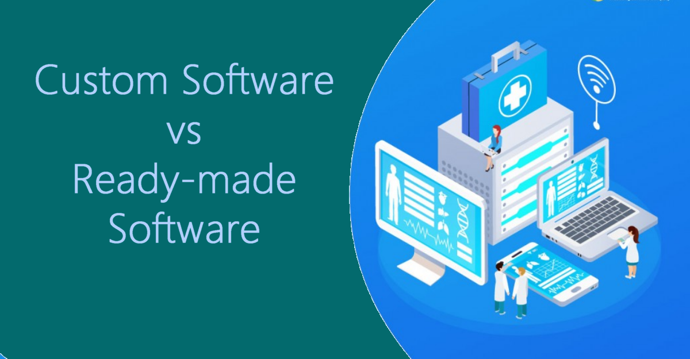

Disadvantages of Off-the-Shelf Software
While off-the-shelf software and ready-made solutions offer immediate setup, they often create long-term operational bottlenecks. High-volume sectors like hospitals and super-shops rely heavily on commercial solutions due to initial deployment convenience.

Over time, companies face several critical drawbacks:
- Bloated Costs: Subscription fees, mandatory upgrades, and unused feature tiers quickly inflate operating budgets.
- Inflexible Scaling: Modifying features or building custom automation is limited by vendor constraints. Off-the-shelf solutions lack quick support in time of need.
- Data Lock-in: Migrating proprietary database structures out of closed commercial systems can prove complex and costly.
- Security & Downtime Risks: Shared cloud architecture leaves you vulnerable to vendor side outages and global security breaches. You have little control over the app.
Tailored enterprise software ensures complete ownership, seamless integration, and long-term scalability built specifically around your business.
Outgrown off-the-shelf software bottlenecks? Contact us today to discuss building a custom database application designed specifically for your long-term business growth and scalability.
Contact Us